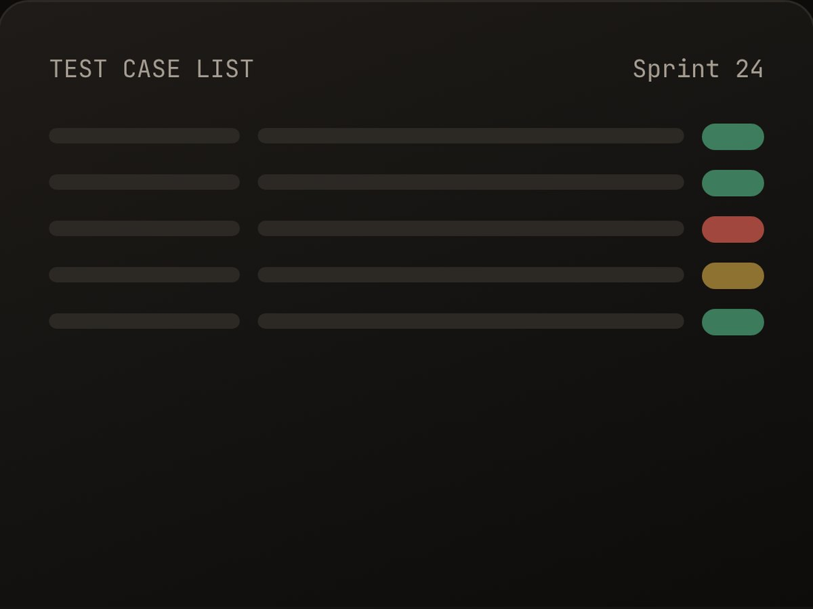
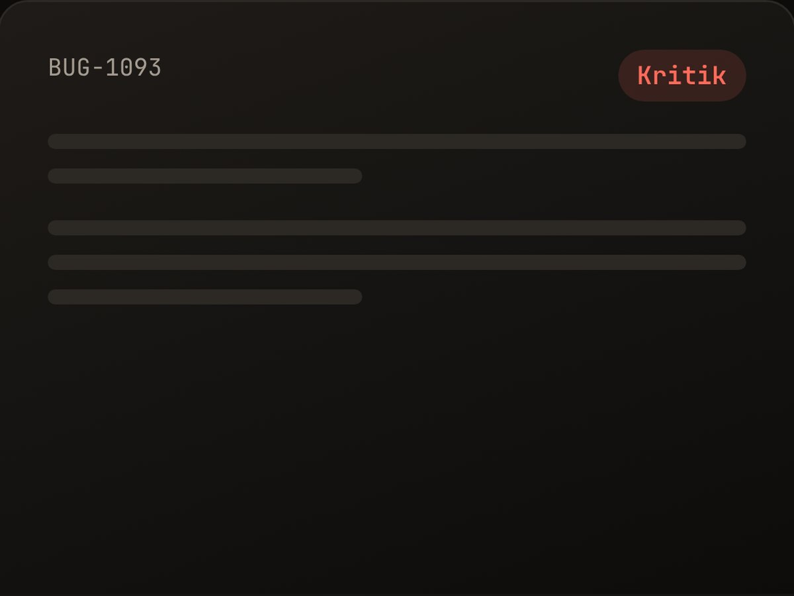
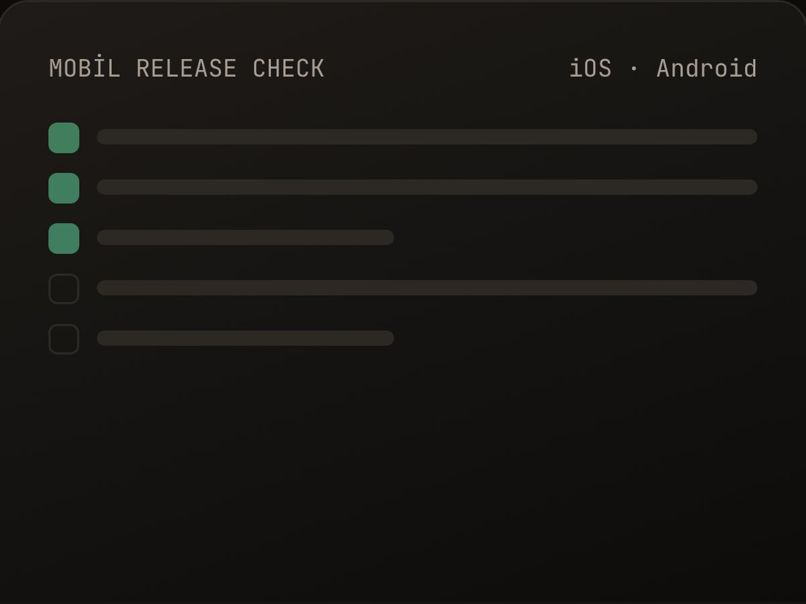
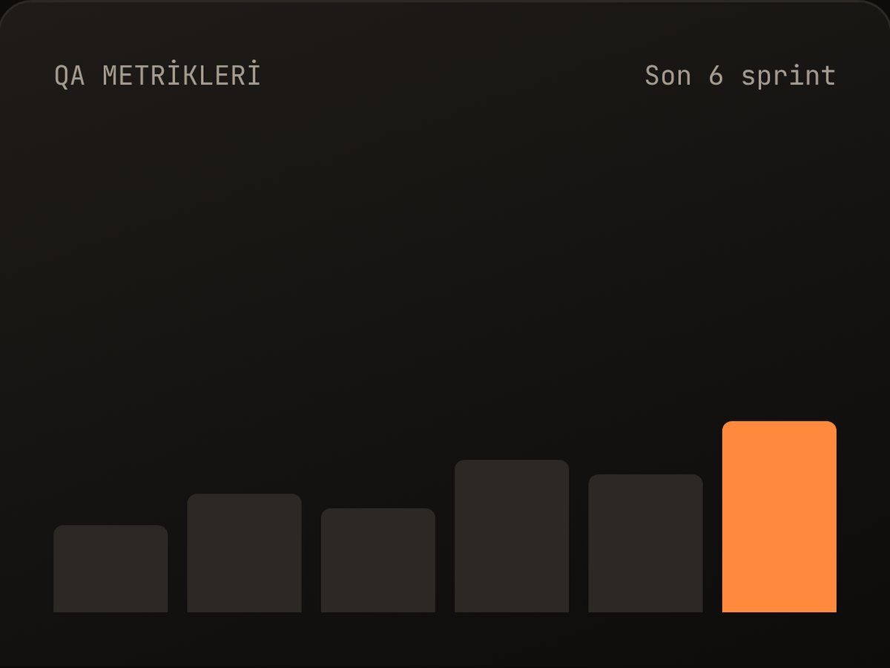
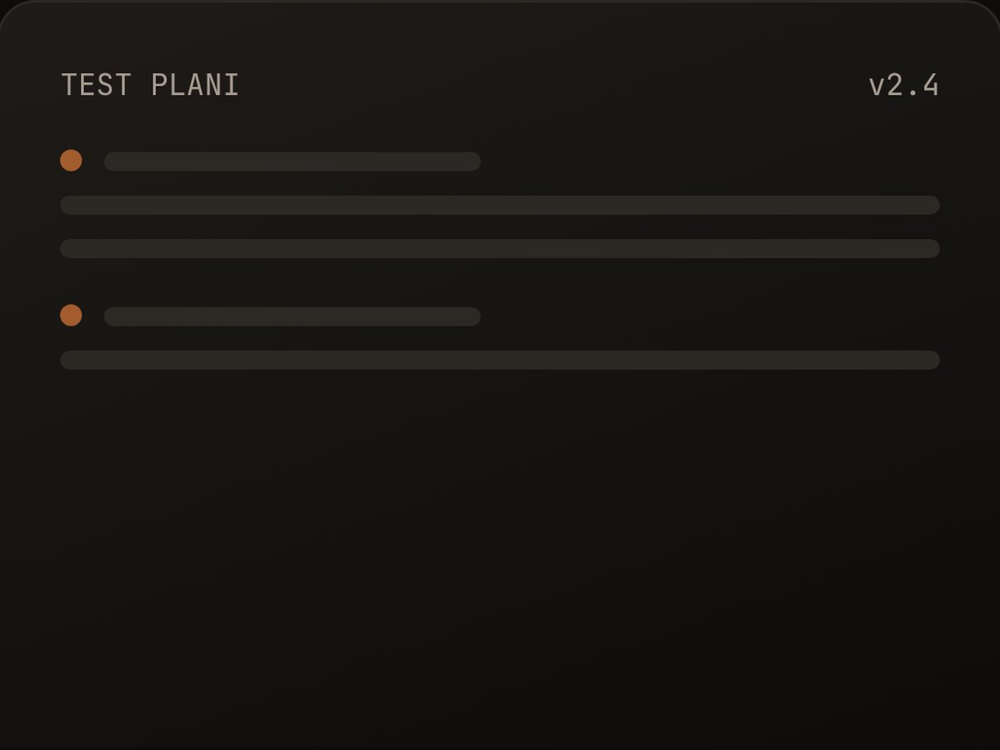
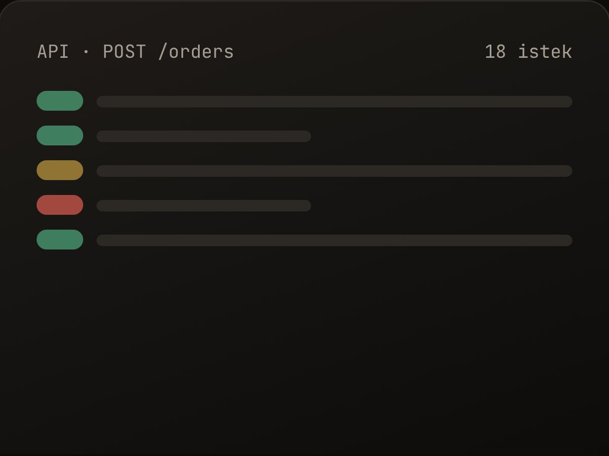

Girdiyi yapıştırın
User story, kabul kriteri, ekran görüntüsü notu ya da sürüm notu. Formatı ne olursa olsun QAcrew okur.
US-482 · "Kullanıcı kayıtlı kartla ödeme yapabilmeli…"
Forge, QAcrew Studio çatısı altında geliştirilen QA dokümantasyon aracıdır. Bu sayfada görünen akışlar ve çıktılar ürün demosudur; gerçek kullanıcı hesabı ve üretim erişimi yakında yayına alınacaktır.
Ekibinizin sprint ritmini bozmadan, mevcut araçlarınızın içinde çalışır.
User story, kabul kriteri, ekran görüntüsü notu ya da sürüm notu. Formatı ne olursa olsun QAcrew okur.
Test senaryosu, bug raporu ya da checklist. Pozitif, negatif ve sınır değer senaryoları önceliklendirilmiş halde gelir; dilediğinizi düzenleyin.
CSV olarak indirin; Excel veya Google Sheets’te açıp ekibinizle paylaşın.
Hepsi düzenlenebilir, hepsi sahada denenmiş. Mobil uygulamadan API testine kadar.






QAcrew Pulse, Android beta/debug uygulamasındaki test oturumunu arka planda izleyip crash, ANR, yavaşlık ve son adımları kaydetmeyi hedefliyor. Oturum bitince bunları bug raporu ve performans özetine dönüştürecek; canlı sürüm için tasarlanmıyor.
Android test telefonunuzu hazırlayıp beta/debug uygulamasına bağlayacaksınız.
Uygulamayı normal şekilde denerken Pulse oturum verilerini arka planda toplamayı hedefleyecek.
Oturum sonunda bug raporu ve performans özeti hazırlanması planlanıyor.
14:02:11 PaymentActivity açıldı 3.2 sn 14:02:14 POST /payments 1.8 sn · yavaş 14:02:19 CRASH NullPointerException 14:02:19 Son adım: Ödemeyi onayla
Pulse geliştirme sürecini takip etmek ister misiniz?
İlgileniyorum, haber verForge şu an demo aşamasında. Gerçek hesap, üretim ve fiyatlandırma özellikleri tamamlandığında QAcrew Studio çatısı altında yayınlanacak.
Aşağıdaki örnekler ürün önizlemesini anlatır; müşteri yorumu veya gerçek kullanım verisi değildir.
User story ve kabul kriterlerini ön koşulları, adımları ve beklenen sonuçları olan bir test setine dönüştürme.
Dağınık hata bildirimini yeniden üretme adımları ve eksik bilgi sorularıyla yapılandırma.
Değişen modülleri temel alarak gözden geçirilebilir regresyon kapsamı oluşturma.
Burada olmayan bir şey mi var? Bize yazın, bir iş günü içinde dönelim.
Hayır. Sayfa ve panel demo amaçlıdır; gerçek kullanıcı hesabı ve genel üretim erişimi henüz açılmadı. Yayın öncesi veri işleme ve gizlilik akışları da tamamlanacaktır.
CSV dışa aktarımı yalnızca demo akışında örneklenir; genel kullanım için henüz yayında değildir. PDF ve Jira/Azure DevOps bağlantıları mevcut değildir.
Kaydedilmiş sonuçlar mevcut prototipte düzenlenemez. Kişisel şablon kaydetme ve ekiple paylaşma henüz uygulanmadı.
Abonelik ve ödeme özellikleri henüz sunulmuyor; plan değiştirme veya iade akışı yok.
QAcrew Studio altında geliştirilen Forge demo aşamasında. Genel yayın yakında.